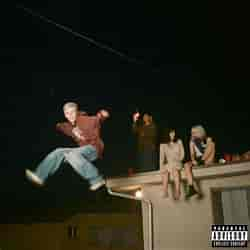
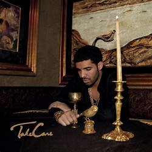
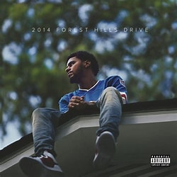
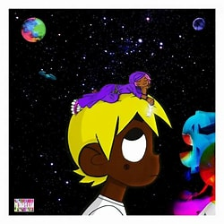
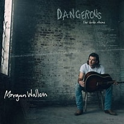

My Favorite Albums
Music helped me get through the tough pandemic we suffered in 2020. It felt like it was the only thing I could do during lockdown.

We Love You Tecca was one of the first albums I listened to during covid. This album was very good and I still listen to it today.
Favorite Song: Left, Right
Artist: Lil Tecca
Listen to the Album!

The First Time (Deluxe Version) was another album I fell in love with. The Kid Laroi is one of my top 5 artists because of how good his voice sounds.
Favorite Song: Pick Sides
Artist: The Kid Laroi
Listen to the Album!

Take Care is an album that holds a special place in my heart because it was the first vinyl I got for my record player during covid.
Favorite Song: Headlines
Artist: Drake
Listen to the Album!

2014 Forest Hills Drive was one of the first albums I listened to by J. Cole. J. Cole has a really good flow when it comes to rapping.
Favorite Song: No Role Modelz
Artist: J. Cole
Listen to the Album!

Eternal Atake came out the day our school found out we were going to be shut down for Covid-19. It will always hold a special memory because my friends and I were listening to it all day.
Favorite Song: Baby Pluto
Artist: Lil Uzi Vert
Listen to the Album!

Dangerous is one of my favorite Country albums. Morgan Wallen does a very good job creating songs and is one of my favorite country artists.
Favorite Song: Sand in My Boots
Artist: Morgan Wallen
Listen to the Album!
Follow My Apple Music Account
If you want to share music you like with me I'll give it a listen!
Apple Music